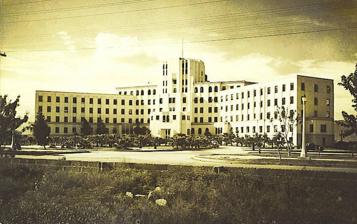

2025
Fundación del proyecto LIMASURE
Nacimiento de la iniciativa en el Instituto José Pardo, sentando las bases de una clínica innovadora.
Cuidamos tu salud, construimos tu bienestar.
CLÍNICA LIMASURE nace como una iniciativa académica en 2025, fruto de la visión de dos jóvenes estudiantes de programación del Instituto José Pardo: Antony Celestino Abad y Sergio Samuel Abraham Mamani Orihuela. Motivados por el deseo de aplicar sus conocimientos en beneficio de la salud pública, decidieron emprender un proyecto digital que acercara servicios médicos a la comunidad del sur de Lima.
La idea surgió al observar la necesidad de una atención médica más accesible, confiable y centrada en el paciente. Así, LIMASURE fue concebida no solo como una clínica, sino como un espacio donde la tecnología, la empatía y la innovación se unen para brindar bienestar a las familias.
Desde sus primeros bocetos como proyecto de aula, LIMASURE se fue transformando en una propuesta seria con visión a largo plazo. Con esfuerzo, compromiso y aprendizaje constante, sus fundadores han sentado las bases de un modelo de atención que aspira a crecer, evolucionar y mejorar la calidad de vida de muchas personas.
Nacimiento de la iniciativa en el Instituto José Pardo, sentando las bases de una clínica innovadora.
Creación de la página web como un proyecto de curso, definiendo la presencia digital.
Inicio de la planificación para establecer una red de atención médica digital en Lima Sur.
Integración de sistemas avanzados para citas médicas en línea y expedientes digitales seguros.
Convertirnos en un modelo de salud accesible y de vanguardia tecnológica en la región.